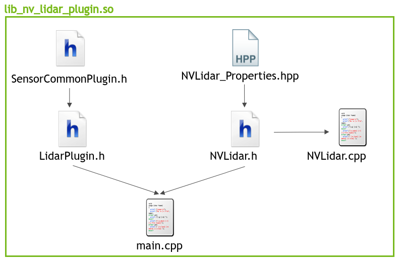

The LIDAR Plugin sample implements a sensor driver for a UDP/TCP-based LIDAR using the comprehensive sensor plugin framework. It can be used to replay sample raw data provided with the SDK (see Lidar Replay Sample), visualize and record live data.
It also provides sources for a refcounted-BufferPool data structure that may be used as reference for other implementations.
This lidar plugin compiles into a shared library (.so) that serves as a reference on how to implement a lidar plugin that is compatible with the DriveWorks Sensor Abstraction Layer (SAL).
Live data visualization:
./sample_lidar_replay --protocol=lidar.custom
--params=device=CUSTOMEX,
ip=XXX.XXX.XXX.XXX,
port=XXXXX,
protocol=[udp|tcp],
scan-frequency=[provide Hz value]
decoder-path=<path_to_lidar_plugin.so>
Data replay: ./sample_lidar_replay –protocol=lidar.virtual –params=file=<path_to_lidar_recording.bin>, decoder-path=<path_to_lidar_plugin.so>,
Data recording(see Recording Tools):
./recorder <path_to_rig_file>
In the following sections, an overview of the implementation details and suggested project structure when developing a plugin for a custom lidar sensor will be provided.
The NV LIDAR is a generic lidar sensor simulation that mimicks a lidar with the following specifications:
Supported protocols: UDP/TCP Scan-frequency: 30 Hz Maximum point cloud size: 50000
The plugin framework defines a set of function pointer definitions which must be implemented and exported to the SAL. For Lidar sensors, the plugin must have implementations for the function pointers defined in:
In addition, the plugin must implement & export the function, dwSensorLidarPlugin_getFunctionTable(), which is the only C function that needs to be exposed from the shared object. This allows the developer flexibility to implement internals of their plugin in C++, if necessary.
The file setup for the plugin implementation is depicted in the following image. It is not an obligatory project setup, but rather a recommendation which is easy to maintain and which this plugin implementation follows.

The project is split into three components:
NVLidar.cpp and NVLidar.h contain the sensor specific functionality needed to process the data being provided by the sensor along with its initialization and life cycle management.
NVLidar_Properties.hpp contains characteristics of the data stream which are utilized in the decoding logic as well as information on the layout of the data structures the received raw data is expected to map to.
The specific implementation details are all accessible in the respective project files for the NV Lidar plugin.
Specifics regarding the API function calls can be found in the Custom Lidars (Comprehensive) section.
Based on the interface definition the functions in the NVLidar class are mapped accordingly to their respective common sensor function call and sensor type specific funciton calls that the plugin API exposes. (see tables below)
Common Functions (see Common Interface):
| API function | NVLidar member function |
|---|---|
dwSensorPlugin_createHandle() | NVLidar() |
dwSensorPlugin_release() | closeFileDescriptor() |
dwSensorPlugin_createSensor() | createSensor() |
dwSensorPlugin_start() | startSensor() |
dwSensorPlugin_stop() | stopSensor() |
dwSensorPlugin_reset() | resetSensor() |
dwSensorPlugin_readRawData() | readRawData() |
dwSensorPlugin_returnRawData() | returnRawData() |
dwSensorPlugin_pushData() | pushRawData() |
Lidar Specific Functions (see LidarPlugin.h):
| API function | NVLidar member function |
|---|---|
dwSensorLidarPlugin_parseDataBuffer() | parseDataBuffer() |
dwSensorLidarPlugin_getDecoderConstants() | getDecoderConstants() |
Naming of the sensor class functions does not have to follow the above chosen names as it is merely a suggestion.
Once the sensor class is implemented, one can proceed to map the functions according to the table lined out above.
This happens in the project file main.cpp which is the missing link between the API interface calls and the custom sensor class.
Once the respective functions are populated with their counter part in the custom lidar sensor class in the main.cpp project file, the last step is to map the those functions in the function table that is used by the SAL to access them (see dwSensorLidarPlugin_getFunctionTable() in main.cpp).
At this point the plugin implementation is complete and the project can be compiled to a shared library, ready to be used with DriveWorks. This enables processing of the custom lidar sensor data in a format that is usable within DriveWorks.